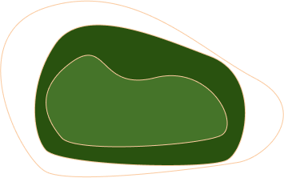

GreenWashing?
Due to climate change and the need to preserve the environment, companies have
one more reason to make sustainable decisions, or at least to pretend to do so.
The line between green marketing campaigns and greenwashing can be very fine and the effects of doing
one or the other very different.
These narratives are used to position companies and their partners as good corporate citizens to
different audiences.
good corporate citizens to different audiences.
Plastics and its great damage.
Since 1950 to 2018, about 6.3 billion tonnes of plastics have been produced worldwide, 9% and 12% of
which have been recycled and incinerated, respectively. Human population increase and consistent demand
for plastics and plastic products are responsible for continuous increase in the production of plastics,
generation of plastic waste and its accompanied environmental pollution. We have reviewed in this paper,
the most relevant literatures on the different types of plastics in production, the hazardous chemical
constituents, prevailing disposal methods and the detrimental effects of these constituents to air,
water, soil, organisms and human health viz-a-viz the different disposal methods.
An estimated 8 million tonnes of plastic is yearly released into the ocean, leading to degradation of
marine habitat which eventually affects aquatic organisms. Long term usage and exposure of plastics and
plastic products to high temperature can lead to leaching of toxic chemical constituents into food,
drinks and water. Indiscriminate disposal of plastics on land and open air burning can lead to the
release of toxic chemicals into the air causing public health hazards. This paper also presents
recommendations for global prevention and control of plastic wastes.

The dark side of soft drink companies
Large soft drink companies have a great environmental and economic impact, which are the most important
to the point of controlling the market and monopolizing places to extract products and sell them,
generating a bad environmental impact with campaigns that excuse themselves by contradicting their
actions.
The industry has caused overexploitation of aquifers mainly in Yucatan, Quintana Roo and Chiapas. To
make half a liter of soda you will need 59 liters of water.
It extracts 87 billion of water per year. It is the most water-consuming companies. Soft drinks
companies are authorized to extract from the aquifers and state freshwater reserves around 1.2 million
liters per day. Soft drinks companies has been accused of dehydrating communities in its pursuit of
water resources to feed its own plants, drying up farmers' wells and destroying local agriculture.
Soft drinks and their health consequences
Regarding health damage, it has been shown that a high consumption of sugars produces diseases such as
obesity, metabolic disorders and tooth decay. In turn, obesity is related to type II diabetes,
hypertension, dyslipidemia, some types of cancer and chronic inflammation that weakens the immune
response.